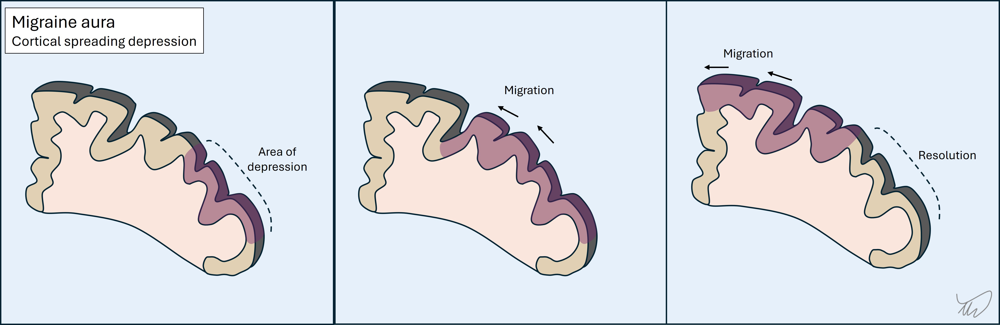
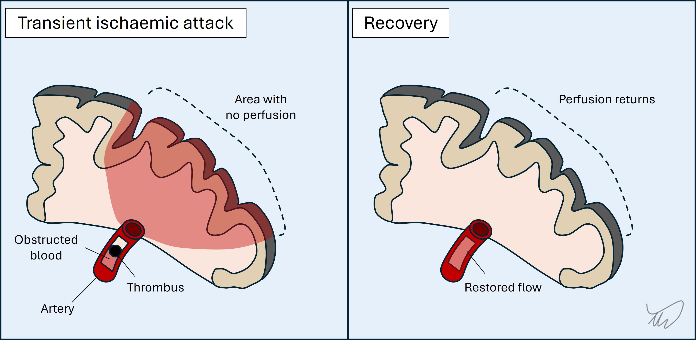
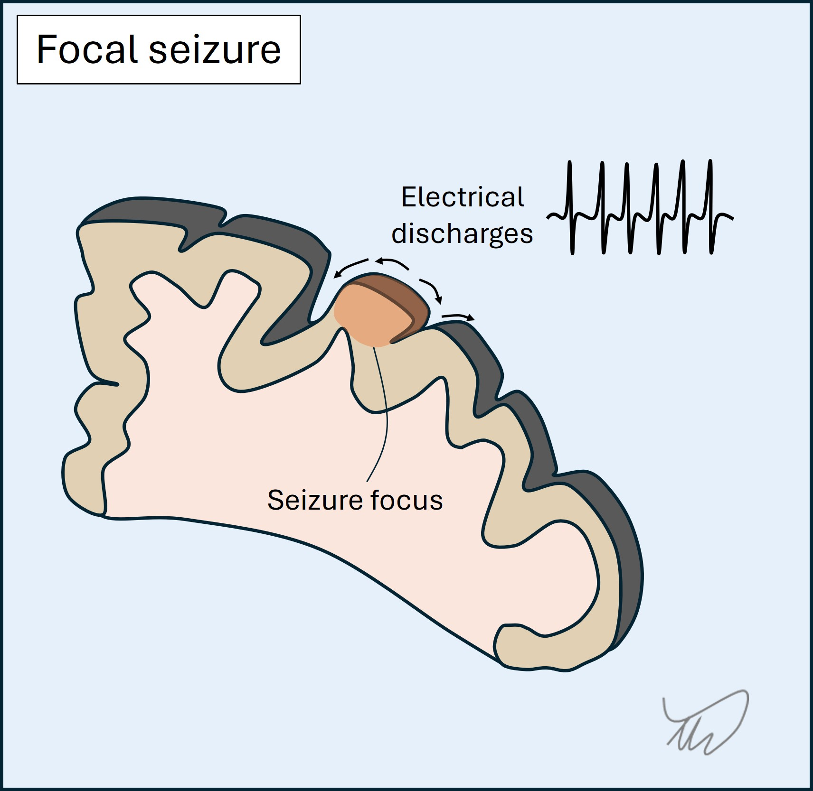
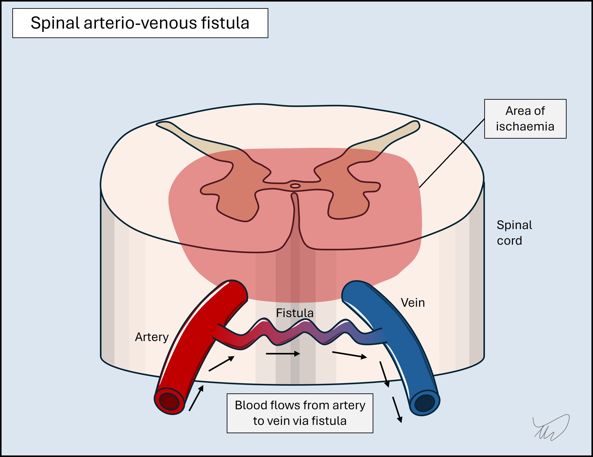
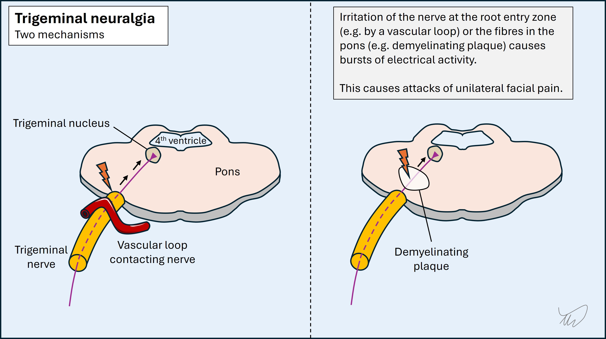

APPROACH: WHERE IS THE LESION, WHAT IS THE LESION?
History - how to localise with questions
We approach neurology the same way we do any area of medicine - first the history, then the examination, and base our diagnostic impression on these, then investigate to confirm or refute one or more hypotheses. Investigations should be tailored to the situation and we should have an idea of how we will react to positive, negative or ambiguous results.
Perhaps more than any other branch of medicine, neurology depends heavily on the history, and we use it to do most of the work needed to answer our two questions. The art of good history-taking is arguably the major skill of neurologists.
In practice we do not structure our history into ‘where’ and ‘what’ - we elicit both naturally through listening and asking. For illustrative reasons I have separated the two questions out to show how the history answers both.
This is not a complete guide to history-taking, and there is no single ‘structured neurological history’ - it varies with the problem. This is a specific focus on ‘where’ and ‘what’, with practical suggestions on how to explore them, including how to clarify what patients are really saying - rather than taking things at face value.
There is a very long list of neurological symptoms. Some localise to quite narrow territories, although others can arise from a wide range of anatomical sites.
The history tells us what the symptoms are, and while we interview the patient, we should be aiming to map the symptoms to a given region of the nervous system - initially in broad terms (i.e. the rough ‘neighbourhood’) and then fine-tuning.
The crude localisation may be obvious immediately, for example a headache (nearly always cranial region), cognitive disorder (brain), or vertigo (vestibular system, brainstem or cerebellum).
However for other symptoms there are multiple possibilities, particularly if a single limb is symptomatic - for example, unilateral distal leg weakness could be a very distal lesion in the lower motor neuron (e.g. common peroneal nerve), a very proximal upper motor neuron lesion (motor cortex), or anywhere in between - so the localisation is broad.
We map the symptoms by asking questions to elicit such features as the following.
Distribution. Diffuse symptoms are easier to localise if due to a focal lesion. If symptoms affect the whole body on one side, the problem is in the opposite hemisphere. Symptoms limited to a narrow site (e.g. foot drop) could potentially arise from a very wide number of sites in contrast and are harder to localise without looking for additional clues (e.g. sensory loss, lower motor neuron signs)
Lateralisation. Is the issue on one side, or both? If it affects both sides in different areas (e.g. right face and left body), or in different modalities (e.g. weak right side, numb left) this has high localising value. Bilateral symptoms are usually not due to brain pathology - but narrowing down further takes detailed assessment.
Presence of symptoms suggestive of a given region - cognitive problems or seizures (brain), sphincters (spine or cauda equina), fatiguability (neuromuscular junction).
The history is best done by letting the patient speak for themselves, and listening carefully - not just to what they say, but how they say it, and what was their reason for seeking medical attention. A huge amount can be gathered from the latter, particularly if it wasn’t their own idea to consult a neurologist. If they brought someone along, subtly observe them while the patient speaks - body language gives away a great deal. If the history involves cognitive changes or a period of altered consciousness, take a collateral history from this person - a crucial skill in neurology.
For symptoms such as weakness, clumsiness or sensory disturbance, try to get a sense of the distribution while the patient speaks. They may state this clearly (‘My hands don’t work’). They may even demonstrate affected areas (e.g. circling a numb patch on the thigh). They may also not clearly state them (‘I’ve got weak legs’), but speak of their functional impact, such as reduced ability to walk certain distances or a tendency to falls.
After this, we then interrogate for details, including carefully exploring language used - words stated often mean something else, so don’t take them at face value. ‘Numbness’ frequently means ‘weakness’ and vice versa. ‘Dizzy’ can mean any number of things and often doesn’t mean dizziness at all. ‘Seizure’, ‘vacant’, ‘shaky’ and ‘slurred speech’ are other examples.
If medical terminology is used, politely ask for clarification of what is actually meant. This can cause offence if done tactlessly, but we should not assume the term is being used properly - many reported ‘tonic-clonics’ are neither tonic nor clonic and often are not even seizures.
It’s not good to be blunt and challenge the patient on their word choice - ‘What do you mean by dizzy?’. Some do this, but it can make the atmosphere feel hostile and sour rapport. The patient is not on trial, and they should be treated with dignity.
Better to ask them to expand - ‘Can you describe the feeling in more detail - what exactly are you experiencing?’. Try not to put words in the patient’s mouth (‘Would you say it felt like the room was violently spinning?’). Avoid leading questions (‘You didn’t have any slurred speech, right?’).
Note that these word usage issues are not due to anyone creating difficulty on purpose, nor a lack of education - it’s a natural part of how humans communicate about their health. Often the subjective experience of a symptom feels quite different to what is actually happening; numbness feeling like weakness is classic - you only have to go out in cold weather without gloves to experience this.
We should then elicit the presence or absence of other symptoms not volunteered (direct symptom enquiry). There is a huge list of neurological symptoms so we don’t need to cover them all. It’s best to focus on those relevant to the presentation, with symptoms that help discriminate between causes - e.g. for dizziness, other symptoms related to hearing (tinnitus, ear pain) or posterior fossa structures (slurred speech, double vision, clumsiness). Their presence/absence aids with localisation and they should be directly asked about.
This part is somewhat ‘checklist’ - ask specific closed questions (‘Have you had any double vision?’). Avoid multi-option questions (‘Have you had any clumsiness, slurred speech, or double vision?’). There’s a risk some suggestible patients will answer yes to symptoms they haven’t had - so don’t take a ‘yes’ at face value. Ask for more detail, such as examples of when the symptom has happened and what they’ve noted. The person accompanying may be able to comment - if they’ve noted the symptom too, that’s valuable and lends it some weight. In some situations they’ve noticed the symptom while the patient has not, which may in some cases indicate cognitive issues.
Ask about the functional effects of symptoms. This is important to get a sense of how severe they are and if the patient is at risk, whether of falls, work performance issues, or inability managing at home without help.
It also offers localising value - certain functions are affected by particular neurological problems.
Difficulty climbing stairs, lifting objects from shelves or unloading a washing machine suggests proximal weakness. Falling in the dark suggests sensory ataxia (large-fibre neuropathy, dorsal root ganglia, or dorsal columns of the spine). Problems with buttons, zips, laces and opening packets indicates fine motor problems, often from neuropathy or myelopathy. Unsteadiness on bumpy ground often indicates vestibular dysfunction or ataxia. Cognitive symptoms cause all kinds of functional problems in daily basic tasks, e.g. making a meal from scratch, working appliances, driving, or social interactions.It is also useful to work out what patients are no longer able to do - or what they’re avoiding doing. They may not report too many difficulties in daily life, but that’s because they’ve stopped doing things they used to - ask what those were, if they noticed problems during them, and what would happen if they tried now.
We already reviewed how the different types of lesion manifest (see Where?).
The following describes the approach to exploring this in the history, considering onset, subsequent evolution, transient symptoms, associated features, and how to use demographic factors as clues to the aetiology.
OnsetThe tempo of symptom onset is a fundamental point in neurology and reliably distinguishes the type of lesion - but the history has to be done carefully. Symptoms can arise over any time frame: sudden (instantaneous), seconds, minutes, hours, days, weeks, months or years.
It is common for symptoms to be reported as sudden-onset, particularly severe ones - but many of these actually are not. When they truly are, it is significant - particularly for vascular disorders such as stroke (for focal symptoms) and subarachnoid haemorrhage (for headache). When they are not, we can think of this as ‘pseudo-sudden’ onset, and the diagnostic search shifts elsewhere. Hence, when patients report sudden-onset symptoms, we should clarify what they mean.
Sometimes it is obvious that symptoms began suddenly, for example a witness statement that the person collapsed in the middle of an action. Another example is someone who clearly remembers abruptly losing their ability to speak and only producing incomprehensible sounds when they tried for the next 5 minutes - then things suddenly returned to normal.
Other times it can be difficult to establish the tempo of onset. Patients may report sudden- onset, but in fact the symptoms have been present for some time; skill is required to unravel this.
It often happens when symptoms cross a certain threshold to cause problems, prompting the person to seek healthcare.
Alternatively the symptoms may have been exposed during a specific situation or task - for example a patient who abruptly becomes aware of a communication problem during a work speech (as do their colleagues), but on enquiry this has in fact been developing slowly over weeks.
When this ‘pseudo-sudden’ onset happens, there may in hindsight have been difficulties that had been dismissed as due to innocent factors (tiredness, stress), or attributed to another condition, whether by the patient or their doctors; one example is dysarthric speech in motor neuron disease being attributed to a blocked nose. Another common scapegoat is ‘age’ - including in people far too young to expect such symptoms, and with symptoms far too rapid to be due to ageing!
This pitfall is common with cognitive symptoms, which are often reported as sudden-onset, but have actually been developing insidiously for some time - they were just exposed at a given point, for example confusion manifesting while driving an unfamiliar route. Occasionally, relatives who have not seen the patient in some time may note a stark change since their last encounter and interpret this as sudden, not realising they are an unreliable witness, having been off the scene for months!
Another strategy is to look for subtle prodromal symptoms in the preceding period. In the case of headache, lethargy, appetite changes and irritability preceding the headache may suggest migraine, and direct us away from subarachnoid haemorrhage - a lethal condition we must never miss, but which has no prodrome.
The best way to gauge the tempo of onset is to ask about the preceding time window and whether there were any markers - in hindsight - that the patient was in anything less than their usual level of neurological health and functioning. This might be indicated in issues such as a tendency to stumble, a few ‘innocent’ memory errors (such as frequently losing items) that in hindsight appear relevant, or subtle changes in speech attributed to anxiety. The hazard of this look-back approach is identifying irrelevant ‘red herrings’ that in hindsight take on false significance - so we need to be careful and avoid confirmation bias.
For an evolving history, timelines are invaluable - but these rarely come naturally to patients, particularly over longer durations. Patients rarely come to us with a full chronology of symptoms and their progression - it is our job to elicit this.
It can help to ask about specific dates - for example how they were at Christmas, their birthday, a wedding, or at the time something significant happened such as a sports match. Failing that, be direct - for example, if the problem is with walking, ‘If I met you last week - how far would you have been able to walk? What about 2 weeks ago?’. In this example, the patient may be vague, so we can suggest a well-known local area, for example (in my case) the length of Princes street. This type of questioning is useful in subacute evolving disorders, for example inflammatory neuropathy, where things quickly change over days. If we can get specific examples, this is helpful - for example, the patient’s usual dog walk having to be shortened on Monday, then difficulty even getting around the house on Wednesday before calling an ambulance.
DevelopmentIn addition to onset, we can tell a lot from what happens next.
We don’t have this luxury when seeing a patient in the emergency setting shortly after new symptoms began - and we generally can’t sit and wait to find out!
However, we do when we see people who present after a delay, or in the outpatient setting, and this is the case for many neurological encounters.
Plateau and improvement, if present, are informative.
Vascular diseases come on abruptly, tend to plateau immediately or otherwise within 24-48 hours, then (if not fatal) either remain static or gradually improve - whether partially or completely - in the coming weeks and months.
Inflammation is similar but with more gradual onset over hours or days, sometimes taking 1-2 weeks to plateau, and in many cases recovering after, over a slower tempo (weeks-months). Examples are a demyelinating lesion causing optic neuritis or myelitis, or inflammatory neuritis of the facial nerve (Bell’s palsy). This is a generalisation though - some inflammatory disorders can progress to a life-threatening level (e.g. autoimmune encephalitis), so the natural history is not always one of onset, peak, then resolution.
Constant worsening is also informative. Degenerative disease and untreated tumours get worse relentlessly, usually gradually over months or years. Remission does not naturally occur.
Of other types of lesion, some may naturally come on and then plateau and resolve. This is often the case with metabolic disorders, but only if the underlying issue self-corrects (e.g. hypoglycaemia) - others may not without intervention, for example encephalopathy due to renal or liver failure. Likewise, toxins may reach peak effect then be cleared from the system - the best known and most common being ethanol - although some will produce deadly effects in the peak phase, and supportive measures may be necessary - for example paralysis due to botulism or organophosphates.
Onset, evolution, plateau and recovery can also be the case with compressive lesions, but usually only if the consequence is reversible inflammation in the compressed structure - the culprit lesion doesn’t tend to return to its initial position. A common example is irritation of a nerve root from a disc prolapse, which often causes severe radicular pain and sensory disturbance for several weeks and then resolves as root inflammation dies down (the disc itself does not tend to un-prolapse) - hence, we do not tend to operate on this in the absence of additional deficits (mainly motor).
However, other compressive conditions do not get better without surgical assistance, for example advanced carpal tunnel syndrome, cauda equina syndrome, or oculomotor palsy due to an adjacent aneurysm. In these, even after decompression, the damage may be permanent, and the procedure only prevents further progression.
Transient and paroxysmal symptomsA major group of disorders feature transient episodes, with symptoms happening over a short window of time. Some of these are characterised by recurrence over time and the episodes may be stereotyped, which is diagnostically very useful.
Many such disorders exist, but the ‘big three’ are migraine, ischaemia, and seizure. Features and tempos may overlap, but distinguishing features exist.
1. MigrainesThese often feature an aura, which has onset over minutes - it comes on quickly, then evolves. The commonest forms are an expanding visual obscuration or migratory tingling sensations in a limb.
Auras usually feature a mix of negative and positive symptoms, for example visual obscuration and flashing lights, or tingling and numbness together. One aura sometimes clears and another follows it, as the process migrates to an adjacent area of brain. Of note, these may move between vascular territories, which is a clue that the issue is not a TIA.
There is generally a headache following the aura(s), but not always - acephalgic migraines exist.
Migraines usually also feature other ‘migrainous symptoms’ such as nausea, light-, sound- and motion-sensitivity, and a feeling of exhaustion. As above, they are often are preceded by a vague prodrome with irritability, lethargy and difficulty concentrating.
2. TIAs
These are sudden-onset. Evolution is unusual - attacks generally reach maximal intensity and distribution at onset.
Symptoms are confined to single unilateral vascular territory (unless multiple TIAs, e.g. cardioembolic, spanning territories and sides). Symptoms may be very focal and isolated - for example dysphasia or diplopia - or more extensive, for example a combination of paralysis and dysphasia
There are usually only negative symptoms, although tingling is common in addition to numbness and is an important exception to this statement. Involuntary movements are not common nor are positive visual phenomena such as flashing lights or colours (more suggestive of migraine or occipital seizure).
Awareness is usually unaffected, although some strokes affect it, particularly thalamic ones. Basilar tip lesions can produce transient unconsciousness.
Resolution is often rapid rather than gradually ‘wearing off’.
 3.SeizuresThese are sudden-onset, evolve over seconds, and have short duration (usually 1-2 minutes).
They feature positive symptoms - in the case of focal seizures they reflect the area of cortex involved. The best known are jerking, abnormal sensations, and strange smells/tastes. There may also be negative symptoms such as dysphasia or numbness - but it is not common for there only to be negative symptoms.
Awareness may be affected, manifesting as vacant staring with maintained posture - people appear almost to ‘freeze’ - and sometimes with automatisms, e.g. fumbling hands, lip smacking or chewing. They may also cause collapse with unconsciousness and tonic-clonic motor activity.
A focal-onset seizure may spread to other regions, so the attack can progress through a sequence, and it may generalise - leading to tonic-clonic activity.
Finally, post-ictal deficits may arise such as weakness (Todd’s paresis) or dysphasia. In addition, a post-ictal state of confusion and lethargy (or sleepiness after a convulsion) may be seen.
A table summarising the above for the ‘big three’ is shown below; it concerns focal rather than generalised seizures.
| Migraine | TIA | Focal seizure | |
|---|---|---|---|
| Onset | Sudden but may have prodrome | Sudden | Sudden |
| Evolution | Over minutes | Usually none (maximal at onset) | Over seconds |
| Positive features | Yes, e.g. visual aura or tingling | No, except tingling | Yes, depending on site of focus |
| Negative features | Yes, e.g. scotoma, numbness, weakness | Yes - main features are negative | May be present, or follow seizure |
| Awareness | Intact | Nearly always intact | May be altered/lost |
| Aftermath | Headache with migrainous features usually | Back to normal | Confusion, lethargy, post-ictal deficits |
| Recurrence | Often, usually stereotyped | Unusual - may occur similarly over short period if a culprit artery | Yes, and stereotyped |
We rarely ever catch anybody in the midst of a brief transient episode - it is more common that we have to assess a completed one. This can be challenging. The principles above enable a clinical diagnosis - describing the symptoms, their evolution and any associated features. Doing this well is a vital skill. For the most part, no test will tell us reliably what a brief paroxysmal event was. We rely entirely on the history, and in epilepsy we sometimes attempt to catch another one ‘red handed’ during electroencephalography.
When such paroxysmal symptoms are single events, diagnosis can be tricky, and we may be forced to investigate rather than take a watch-and-wait approach (particularly for TIA). If they are recurrent this is informative, and if they recur over a long period and are similar or identical each time, this is very helpful. Seizures tend to be very stereotyped. Migraines may vary, but people often experience the same migraine (including prodrome, aura, headache and aftermath) - with experience they know when it’s coming on and what to do.
A recurrent attack happening identically over a long period with long interludes between them is not likely to be TIA - but over a shorter timeframe and with little interlude, it may indicate a critically narrowed artery, so called ‘crescendo TIAs’. The most dramatic example is ‘capsular warning syndrome’, with escalating attacks leading to impending and disabling lacunar stroke - which is almost inevitable unless prevention measures are taken such as antiplatelets and blood pressure control. However, recurrent TIA-like episodes (i.e. sudden, focal, negative symptoms only) can also be due to other causes, for example blood overlying the cortex, and imaging is necessary.
Other causes of paroxysmal symptomsBeyond the ‘big three’ there are many, many other causes of transient neurological symptoms. They are a big part of what neurologists spend time assessing. It is impossible to list them all, but important categories are below. Some of these feature triggers, such as specific movements.
Hypoperfusion produces transient ischaemia. It may be due to limited inflow due to hypertension or a narrow vessel, or alternatively a steal phenomena - in which blood is shunted away from the target site.
i) Limited Inflow
This may globally affect the brain during hypotension arising on posture change or after eating, causing light headedness or syncope, sometimes after a delay - including several minutes. An unusual phenomenon is ‘limb-shaking TIA’ with single arm shaking due to a narrow carotid - which can mimic focal motor seizures.
ii)Steal phenomena
These arise when blood is either diverted into a vein (an arteriovenous fistula, AVF), bypassing the target, or is sucked into a collateral artery, with retrograde ‘steal’ from the artery supplying the now-hypoperfused target. AVFs in the spine are more active during standing and exertion, with episodic leg weakness improving on resting; steal is part of the mechanism, as well as venous hypertension. Subclavian steal syndrome is when subclavian narrowing (proximal to the vertebral artery origin) limits availability of blood to the arm on arm usage, so intracranial blood is sucked backward down the vertebral artery - leading to posterior circulation hypoperfusion.

Fluid flow may be obstructed within a channel. A common example is benign paroxysmal positional vertigo (BPPV), with recurrent episodes of vertigo on head movement due to crystals blocking the vestibular canals, which is debilitating yet easily treated. CSF in the ventricles can also be obstructed due to a mobile mass such as a colloid cyst, causing headache and collapse - a condition to never miss.
Compression of structures may only occur on dynamic movements. This is most common with peripheral nerves, especially the ulnar nerve at the elbow, causing tingling and sometimes involuntary movements and spasms during elbow flexion - for example while driving or leaning on the elbow. It can also occur with radiculopathy, for example during neck movement. We can confirm this during the exam using provocative manoeuvres (e.g Phalen, Spurling and straight leg raise tests).
Electrical discharges in the spine or cranial nerve roots (ephaptic transmission) may cause pain, abnormal sensations, or involuntary movements. This can arise following parenchymal damage, particularly brainstem or spine demyelination, as well as nerve root compression at the brainstem by a blood vessel or a mass. Attacks can sometimes be triggered, for example by touching skin. Trigeminal neuralgia is the most notorious, with bursts of agonising hemifacial pain. Lhermitte’s phenomenon, electric shocks radiating down the neck and into the arms on neck flexion, is another example.
Some metabolic or toxic disturbances can cause transient symptoms if the problem peaks (or troughs in the case of metabolic deficiencies) and then wears off. Hypoglycaemia can mimic TIA/stroke with focal deficits such as weakness or dysarthria. Drugs (including prescribed medicines) can cause transient symptoms as the level peaks, for example ataxia, vertigo and diplopia with anti-seizure medicines, or involuntary movements on various stimulants of abuse.
There are many genetic disorders that produce paroxysmal symptoms such as stiffness, paralysis, ataxia, or involuntary movements - typically due to mutations in genes encoding ion channels. Examples include myotonia, periodic paralysis, episodic ataxia and paroxysmal dyskinesia. Onset is generally in childhood, teens or young adulthood. They do not present for the first time in older people.
Other clues - temporality, triggers, relievers and additional symptomsAdditional characteristics provide clues to the type of lesion/pathology, including diurnal variation, triggering or relieving factors, and other associated symptoms.
Diurnal variation is seen in some conditions. Myasthenia (neuromuscular junction) is worse in the evenings as are some movement disorders, particularly dopa-responsive dystonia, and headaches due to intracranial hypotension. In contrast some disorders often manifest at night, for example cluster headache or frontal lobe seizures.
Demyelination-related symptoms are often worse in heat, including on exercise, during a shower, or amid heatwaves - known as Uhthoff’s phenomenon.
Alcohol and caffeine may worsen or ameliorate symptoms of numerous disorders. Physiological tremors are made worse by caffeine, while alcohol can reduce the effects of essential tremor, as do GABA-ergic medications.
Stress has worsening effects on many neurological disorders - it’s difficult to think of any that improve with it - so the presence of recent stress is not very helpful in terms of thinking about one condition or another. It is a common error to assume symptoms are functional when they follow stress, but so can seizures and strokes. Stress can also be a coincidence, and if you look for it, most patients can identify some source of recent stress - so do not be misled by it!
Some aetiologies may have accompanying symptoms which are worth identifying.
Infection is often accompanied by symptoms such as fever, sweats, rigors, muscle aches and lethargy. They are not always present, and are not specific to infection and can be seen in other types of illness (for example cancer or drug toxicity) - but are important clues to consider. However, the situation can be complicated, as some symptoms are due to inflammation either accompanying infection (para-infectious, for example Bell’s palsy) or following it (post-infectious, most famously Guillain-Barré syndrome).
Cancer can be accompanied by weight loss, lethargy and loss of appetite (anorexia) - i.e. cachectic symptoms. This is certainly true of cancers that metastasise to the nervous system, although primary nervous system tumours often lack these additional clues. These symptoms can also be seen in systemic inflammatory disorders such as sarcoidosis and vasculitis. Some chronic infections cause them, too; this is why tuberculosis used to be called ‘consumption’.
Where, what… and who?The primary way we assess for a lesion site and location should be the history itself - not who the patient is and their risk factors for a given disease, including demographic factors and comorbidities. These do have value, but they are supplementary - adding or reducing weight for certain disorders. Place most weight on the symptoms, not who has them.
Do neurology long enough and you’ll realise that anyone can have anything, and errors are made by discounting possibilities because the patient doesn’t seem like the typical demographic to have a given problem - for example, considering stroke to be unlikely due to young age or lack of (known) risk factors - or the other way round: over-diagnosing stroke/TIA in older people who may have alternative causes.
Among the most problematic is the bias against women, with symptoms often dismissed as anxiety or functional that would be investigated differentially in men. This is also complicated by the tendency to learn symptoms according to how they present in men, which is often different to what women experience.
Base your diagnosis on ‘Where?’ and ‘What?’, rather than ‘Who?’ - but reserve the latter for the formulation, when demographic features can increase or reduce the odds of a given condition. Think of them as risk factors rather than direct diagnostic indicators - unlike the history.
There are some general statements below - none are ‘hard rules’, but reasonable principles.
An older person with a sudden-onset focal neurological disorder and who has multiple vascular risk factors is likely to have had a stroke, although other differentials exist. If instead they present with a severe acute headache, while it may be a migraine, there is a higher probability that they have an underlying serious condition, so investigation may be warranted - whereas a 20 year old with the same headache may more reliably be given reassurance without further testing, assuming no other ‘red flags’ such as sudden-onset or focal features.
In a young woman with focal symptoms which came on over hours-days and persisted, demyelination is an important consideration, though not the only one.
A person with immunocompromise (e.g. HIV, cancer, transplant, or immunosuppressive medication) is at elevated risk of infections. For a given presentation the threshold to investigate is usually lower than in someone with an intact immune system, and the investigation choice should be expanded to cover atypical infections - for example cerebral toxoplasmosis or cryptococcal meningitis.
If someone has lived in or visited an endemic area and presents with a potential neuro-infection, this influences the diagnostic approach. Likewise, a lack of risk factors should lead us to tailor investigations away from some infections. Knowledge of geography, seasonality and exposures enables us to investigate properly.
Not only should we be careful about letting risk factors overly bias us towards specific conditions - we should also not discount other conditions due to the lack of known risk factors. Some people are not known to have risk factors they later turn out to have. A person not known to have risk factors for cerebral venous thrombosis (CVT) may well have both CVT and a risk factor anyway. We should find the CVT then work out why they have it, rather than discounting it on the basis of what we don’t know.
The point is this - we should investigate for a disease if we clinically suspect it, known risk factors or not. Better to find the lesion then work out what caused it, than to miss it and find out at autopsy!
Paraneoplastic syndromes are an interesting example, where we usually find the remote neurological consequences of the cancer (such as encephalitis or neuropathy) before the cancer itself - sometimes months or years earlier. The syndrome is identified, and we then hunt for the tumour. Indeed the specific syndrome influences which tumours we look for - for example breast or gynaecological cancer in cerebellar degeneration. We certainly do not discount the possibility of paraneoplasia in a patient not known to have neoplasia!
Ethnic predispositions to specific conditions may be relevant - but should not bias us heavily. They don’t heavily influence the primary ‘where and what?’, but they come into consideration after.
If we suspect myelitis, neuromyelitis optica (NMO) or Behcet’s disease may be more likely than MS in people who are not white, so we might look for additional clinical evidence for these - for example mucosal ulcers in Behcet’s. Stroke workup may be influenced by ethnicity, for example with intracranial atheroma being commoner in Asian people. Ethnicity is especially relevant for genetic disorders, some of which are prevalent in people from a particular ethnic background, for example certain metabolic disorders in Ashkenazi Jewish people, hereditary amyloidosis in people with ancestry from Portugal or Ireland, and the many different hereditary ataxias in people from various parts of the world.
Sex may add some weight to considerations - but again, should not overly. Men get cluster headache more commonly than women, and vice versa for MS, but women also get cluster headache and men get MS. This also true for men who experience conditions commoner in women (migraine, functional disorder, myasthaenia, subarachnoid haemorrhage…) and women with male-predominant ones (motor neuron disease, Parkinson’s…).
However, some conditions are so heavily associated with one sex that we should be very cautious diagnosing them in the other. Idiopathic intracranial hypertension (IIH) is a likely explanation for headache and papilloedema in a woman with normal brain imaging and high-pressure CSF with normal constituents. In a man with the same BMI, symptoms, scan and CSF, it is very unlikely - so we should consider alternative causes such as sleep apnoea or jugular vein thrombosis. The clinical approach is the same, but the eventual diagnosis weighs in sex significantly. Women can have IIH mimics too, but men only rarely have IIH.
Moving on...The history provides nearly all the information needed, and we should have a good sense of the likely diagnosis (or a shortlist of ‘suspects’) before we move on to the Exam.